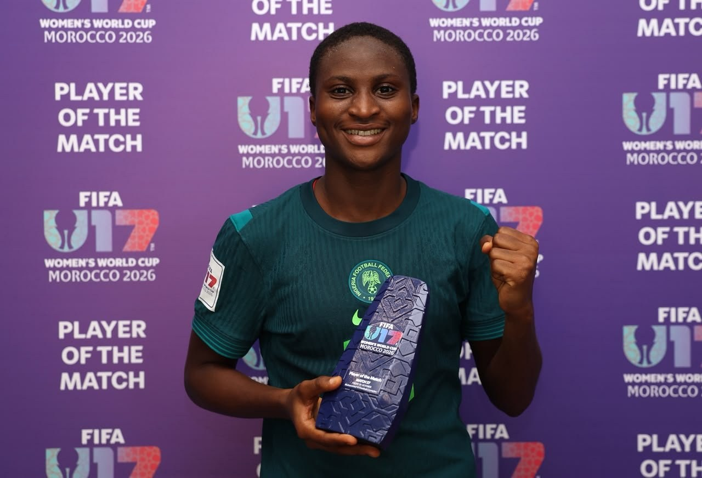

U-17 WWC: Five key players to watch as Flamingos face Venezuela in quarterfinal

Nigeria’s Flamingos meet Venezuela in the quarterfinal of the FIFA U-17 Women’s World Cup, with a place in the semi-finals at stake. After losing their opening match to Poland, Akeem Busari’s side recovered with wins over Puerto Rico, defending champions DPR Korea and Mexico. Venezuela also arrive with momentum after beating Germany 1-0 in the round of 16.
Nigeria forward Umejiaku has scored against Poland, DPR Korea and Mexico, and assisted Precious Oscar’s stoppage-time goal in the 2-0 win over Puerto Rico. Her movement and ability to create chances could help Nigeria break down a Venezuelan defence that held Germany scoreless. Adegbuyi offers another threat: she scored against Puerto Rico and opened the scoring in Nigeria’s 3-1 victory over DPR Korea.
Venezuela’s Diana Bravo scored the fifth-minute goal that eliminated Germany, who had won all three of their group matches. The early strike helped her team settle into a disciplined defensive performance. Nigeria will also need to track Suárez, who scored a stoppage-time winner in Venezuela’s 3-2 group-stage victory over Zambia. Her goal showed she can make the most of an opportunity late in a close match.
Goalkeeper Jane Ijirigho was important to Nigeria’s 2-1 round-of-16 win over Mexico. She saved an effort from captain Citlalli Reyes and tipped Kemberly Garcia’s long-range shot onto the crossbar. The 1.92-metre goalkeeper has been identified by FIFA as the tournament’s tallest player. Nigeria will need her reach and composure if Venezuela create chances, but progress will also depend on the whole team: the Flamingos must be patient in attack, organised at the back and alert throughout the match.
Source: Premium Times